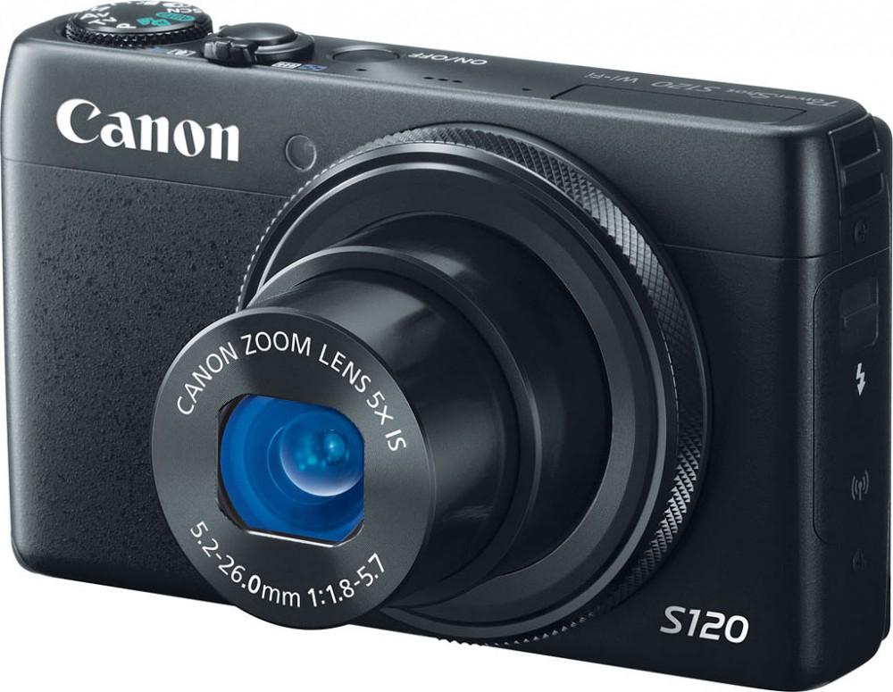
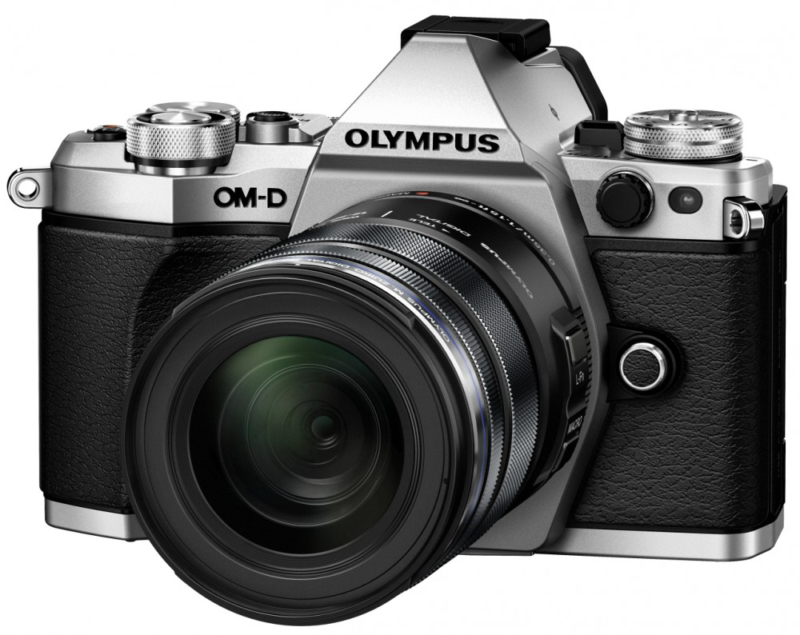
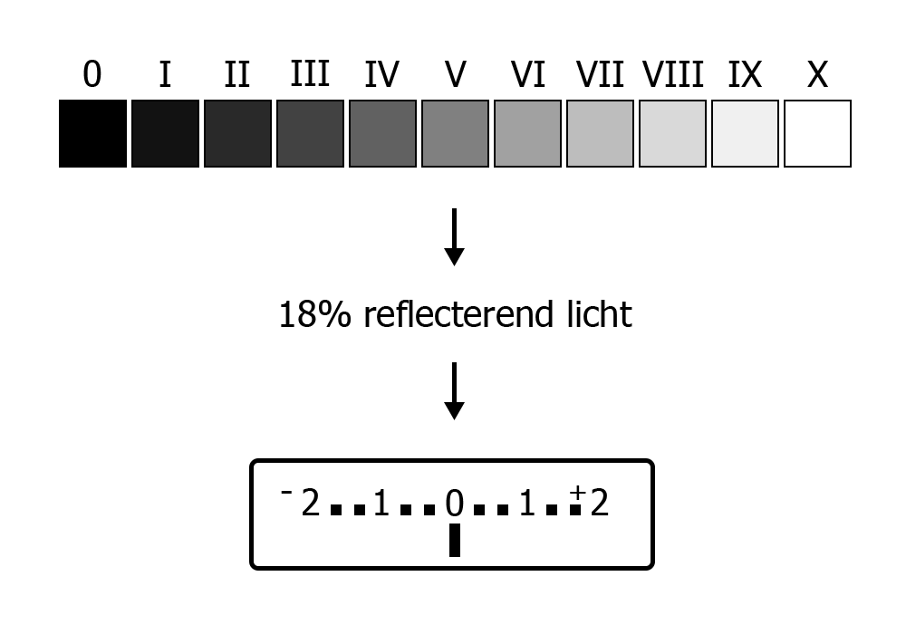

De camera
Onderwerpen
- Soorten camera's
- Hoe werkt een camera
- Hoe meet een camera licht
- Controle over belichting
Soorten camera's
Compact camera
Spiegelreflex camera

Bridge camera

Systeem camera
Hoe werkt een camera

Bron: Hanabi123, CC BY-SA 2.5


Diafragma
Diafragma & f-getal
Groot diafragma = grote lens opening = laag f-getal
- Bijvoorbeeld f/1.8
- Lichtsterke lens
Diafragma & f-getal
Klein diafragma = kleine lens opening = hoog f-getal
- Bijvoorbeeld f/8
- Niet lichtsterke lens

f-getal
f-getal = brandpuntsafstand lens / diameter van de lens
Scherptediepte
Twee foto's naast elkaar met 50mm lens op f/1.4 en f/11.
Oefening
Maak twee foto's: 1 met een groot diafragma (laag f getal) en 1 met een klein diafragma (hoog f getal).
Sluitertijd

Sluitertijd weergave
- Bereik van meeste camera's: 1/4000 - 30 sec
- 1/ wordt vaak weggelaten, dus 250 = 1/250 sec.
- 1" = 1 sec
Sluitertijd voorbeeld
Twee foto's naast elkaar, 1/100 sec en 1 sec
ISO
ISO Voorbeeld
Twee foto's naast elkaar: 1 met ISO 100 en 1 met ISO 3200
Hoe meet een camera licht
Zone systeem & 18%
Soorten lichtmetingen

Vragen / opmerkingen / huiswerk
marcduiker@gmail.com